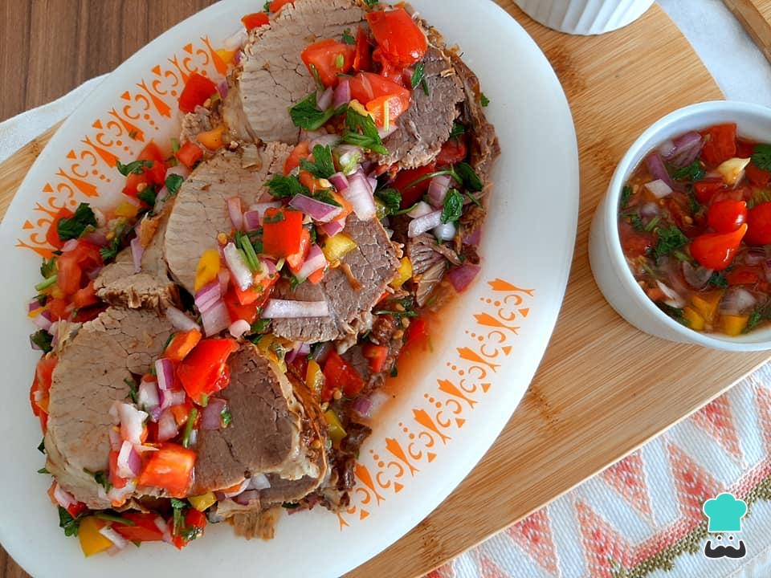

Carnes · Bovinos
Carne de verão

Ingredientes
- 3 dentes de alho
- 1 colher (sopa) de sal
- 1 peça de lagarto com cerca de 1 kg
- 1/4 xícara de óleo
- 3 cebolas cortadas em rodelas
- 5 tomates sem pele e sem sementes, em cubos
- 4 folhas de louro
- 3/4 xícara de vinagre
- 1/2 xícara de água
- 1/2 xícara de azeitonas pretas sem caroço
- 1/2 xícara de alcaparras
- 3/4 xícara de azeite
- sal a gosto
- 1 colher (chá) de açúcar
Modo de preparo
- Misture o alho amassado com o sal e passe por todo o lagarto.
- Aqueça o óleo na panela de pressão e doure a carne de todos os lados.
- Cubra com água, tampe e cozinhe 45 minutos a partir da fervura.
- Retire do fogo e deixe esfriar.
- Para o molho: numa panela, junte cebolas, tomates, louro, vinagre e água; leve ao fogo alto por cerca de 3 minutos. Retire do fogo.
- Acrescente azeitonas, alcaparras, azeite, sal e açúcar; misture e deixe esfriar.
- Coloque um pouco de molho numa embalagem de alumínio, fatie a carne bem fina, cubra com o restante do molho e congele.
Observação
O lagarto também é conhecido como paulista, posta branca ou tatu. Congelamento: cubra a embalagem com filme, etiquete e congele. Descongelamento: na geladeira de um dia para o outro; sirva gelada.